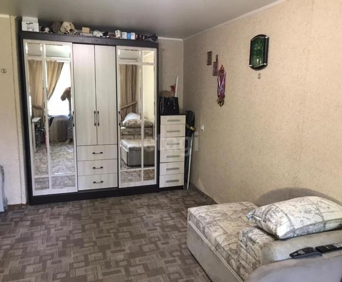

Я приветствую всех на данном сайте. Меня зовут Цалов Никита Алексеевич и сейчас я поведаю вам о Воронеже. В данный момент я учусь в Воронежском государственном университете, поэтому расскажу первые впечатления от этого величественного города.
Мои контактные данные:
Телефон: 8-908-784-31-53
Почта: nikitarudenko20@gmail.com
Месседжер ВК:https://vk.com/riruko
Я родился в п. Борисовка, Белгородская обл. Всё детство любил играть в игры и размышлять как они создатся. Именно для создания различных приложений я и поступил в ВГУ для получения нужных знаний.
Воронеж — столица Черноземья, самый крупный и развитый его город. Другие черноземные города: Орел, Курск, Белгород, Липецк, Тамбов. За почетное звание «столицы» с Воронежем борется Белгород, он опережает Воронеж по темпам социально-экономического развития. Но у Белгорода, на мой взгляд, нет шансов: он не в центре региона и в нем в 2,5 раза меньше жителей.
Изначально город стоял на берегу реки Воронеж, но в 70-х годах ее русло перекрыли и сделали водохранилище. Сейчас это одно из крупнейших в мире водохранилищ, целиком расположенных в черте города.
Водохранилище делит город на две части: правый и левый берег. Центр, культура, набережные, лучшие заведения, самые престижные районы — на правом берегу. На левом располагаются промышленные предприятия, бывшие рабочие окраины и один красивый парк.
В Воронеже комфортный климат. Город на 500 км южнее Москвы. В марте в столице еще лежит снег, а здесь он обычно уже растаял. В Воронеже часто нет снега до января.
В городе много университетов и около 100 000 студентов. Учиться сюда приезжают не только из области, но и из других регионов: Липецка, Тамбова, Курска, Волгограда.
Аренда. Жилье все ищут на «Авито». Средняя арендная плата за однушку с нормальным, но не дизайнерским ремонтом — 10—15 тысяч рублей в зависимости от района. Дизайнерская квартира будет стоить 20—30 тысяч в месяц. Большинство объявлений на «Авито» агентские. За свою работу они хотят половину или полную стоимость месячной платы. Залог при аренде в Воронеже не распространен — при случае всегда можно договориться без него. Все адекватные собственники заключают договор и без проблем делают регистрацию.
;Покупка. Стоимость квартир зависит от района и возраста дома. Средняя цена за квадратный метр — 45—50 тысяч рублей, на окраинах и за городом можно найти и за 30 тысяч. Это необязательно плохое жилье, например воронежский район Бабяково блогер Илья Варламов назвал лучшим жильем экономкласса в России. Однушка на окраине Воронежа обойдется в 1,2—1,5 млн рублей, ближе к центру — в 2—2,5 млн. Почти все новое жилье — это 17-этажные жилые комплексы.
В городе большой частный сектор: есть целые районы, где чувствуешь себя как в деревне, и даже инфраструктура соответствующая. Частные дома есть и на левом берегу, и в Коминтерновском районе, но колоритнее всего частный сектор в Ленинском и Центральном районах.
У правого берега, особенно там, где он граничит с водохранилищем, особый рельеф с оврагами и перепадами высот. Здесь сложно построить высотное здание, поэтому в этом районе до сих пор можно найти деревянные одноэтажные дома из 19-го века. Сюда не ходит транспорт — доехать можно только на машине, да и те часто застревают. Из-за холмов даже ходить там бывает опасно, особенно в гололед. В частном секторе всё чаще строят новые коттеджи, но их владельцы не в силах изменить инфраструктуру, поэтому здесь столетиями ничего не меняется.